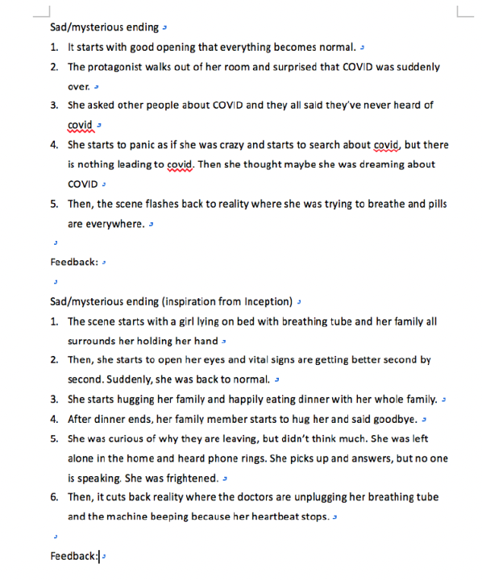
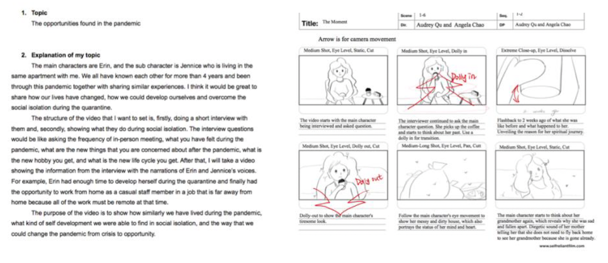
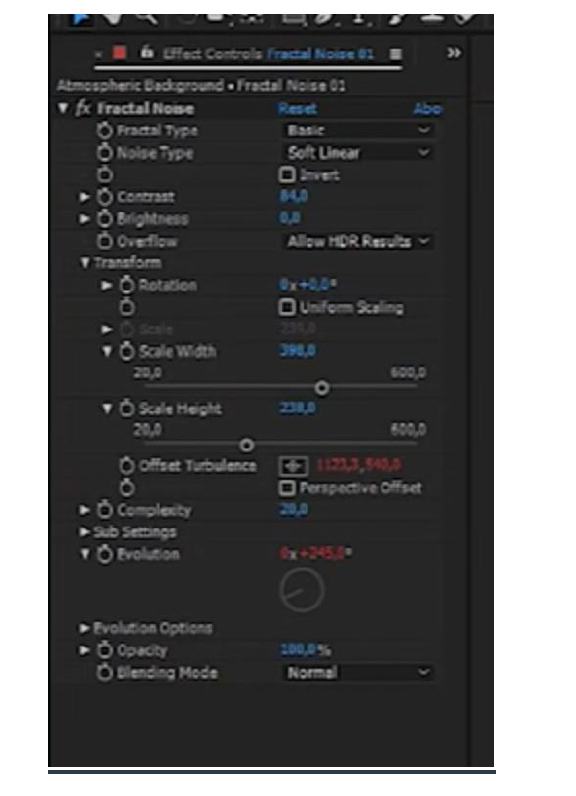

During the chaos of the pandemic, a short film was made based on a true story that captured the resilience of the human spirit. The film followed a heart-broken woman who had been living in a constant state of shattered emotions after a devastating loss. However, everything changed when she received an important letter that sparked a fire within her. She refused to continue living in a state of despair and decided to take matters into her own hands. With newfound courage, she embarked on a journey of self-discovery and healing, documenting her progress in a personal journal. The film showcased the power of hope and the strength of the human will, even in the darkest of times.
The Letter


1st Stage
In the beginning phase of this video production, my group member and I came up with several different ideas based on two main topics and direction that we were interested.

2nd Stage
We've completed the initial stages of our project, including generating a topic and treatment, and even drawing a detailed storyboard to visualize our ideas. With a clear plan in place, we're ready to move on to the next phase of our project and bring our vision to life.

3rd Stage
In order to make our video stand out, we utilized advanced editing software such as AfterEffects and Premiere Pro. With these tools, we were able to masterfully blend different clips and create stunning effects that captivate the viewer. From slow motion to color grading, we explored the many possibilities of these programs to produce a final product that we're proud to share.

4th Stage
To enhance the overall viewing experience, we took extra steps to ensure that our sounds were not only synchronized with the video but also blended smoothly. To achieve this, we added background music and sound effects that complemented the video while creating a better emotional atmosphere. The music was carefully selected to match the mood of the video, while the sound effects were added to emphasize key moments and draw the viewer's attention. The end result was a polished and cohesive video that left a lasting impression on our audience.